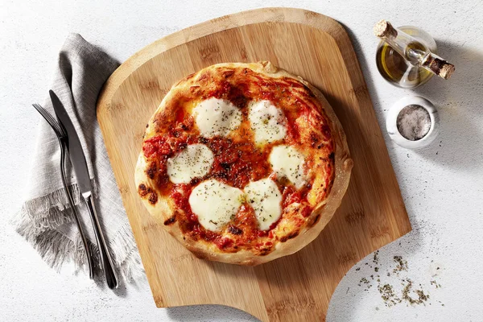
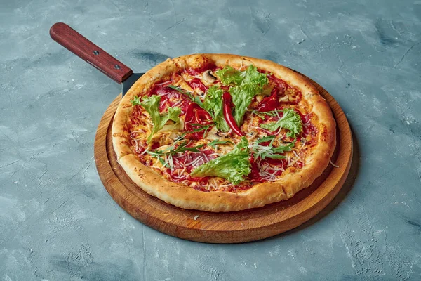
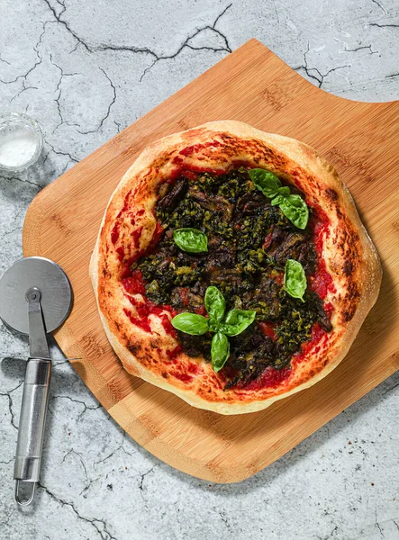

Recetas Nuestras

- Harina de trigo
160 g
Agua templada
100 ml
Sal fina cucharadita
1
Aceite de oliva virgen extra cucharada
1
Levadura seca de panadería o fresca (un cuarto de paquete)
7 g

- La segunda opción que os proponemos es una Pizza mexicana de carne elaborada con una base de tomate y queso cubierta con carne picada, cebolla y rodajas de aguacate. El toque picante adecuado lo decides tú añadiendo más o menos Tabasco o chiles jalapeños.

- Esta Pizza de pera, jamón y gorgonzola es una de mis pizzas favoritas ya que el toque dulce de la pera encaja muy bien con el salado del jamón, en contraste con el sabor especial del queso gorgonzola. Me estoy relamiendo al recordarla.